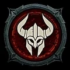

Barbar
Ein kompromissloser Waffenmeister, der sich mitten in Gegnergruppen am wohlsten fühlt und mehrere Waffengattungen gleichzeitig beherrscht.
- Kernressource
- Wut
- Klassenmechanik
- Arsenal-System
- Reichweite
- Nahkampf
- Schwerpunkt
- Waffenwechsel · Berserker
Spielweise
Wut entsteht im Gefecht und speist mächtige Kernfertigkeiten. Das Arsenal weist Angriffen unterschiedliche Waffen zu und belohnt den Wechsel zwischen ihnen. Daraus entstehen Spielweisen rund um Blutung, Überwältigen, Wirbelwind und Berserkermodus.
Stärken
Darauf solltest du achten
Viele Varianten brauchen zunächst Wut und eine gute Position, bevor ihr voller Schaden entsteht.
Fertigkeitsfamilien
Basis-, Kern-, defensive und Waffenmeisterschaftsfertigkeiten greifen ineinander. Rufe stärken die Gruppe oder den Barbaren selbst, während ultimative Fertigkeiten kurze, sehr starke Angriffsfenster eröffnen.
Typische Ausrichtungen
Wirbelwind und Doppelschwung setzen auf konstantes Tempo; Hammer der Urahnen und Aufwühlen auf schwere Treffer. Blutungsvarianten gewinnen über Zeit, Waffenwechsel-Builds über häufig ausgelöste Arsenal-Boni.
Besonderheit des Arsenals
Der Barbar trägt vier Waffen gleichzeitig. Fertigkeiten lassen sich bestimmten Waffen zuordnen; Expertise-Boni wachsen durch ihre Benutzung. Eine zusätzliche Technik überträgt den Bonus einer Waffengattung auf den gesamten Build.
Für wen geeignet?
Für Spieler, die unmittelbar in Gegnergruppen springen, Treffer aushalten und ihren Build über Waffenwahl, Ressourcenfluss und kurze Berserkerfenster optimieren möchten.